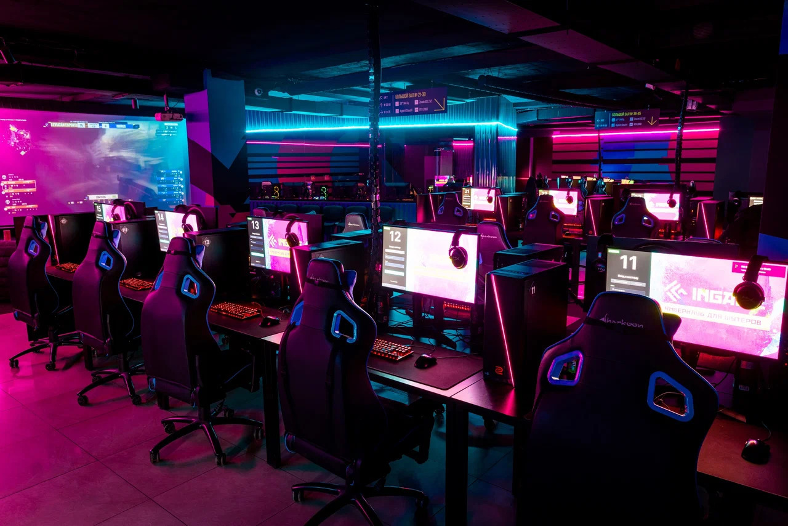
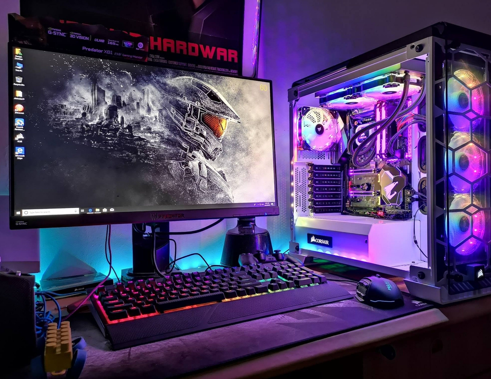
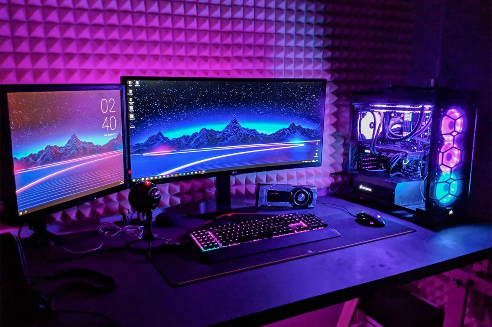
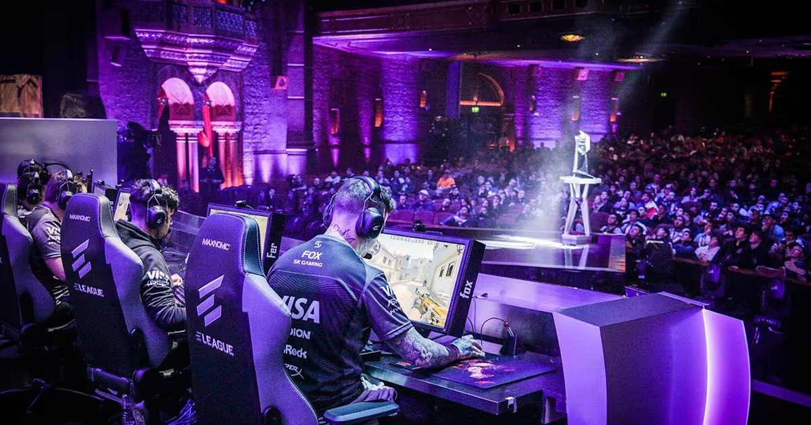

Наша история
CyberZone открылся в 2026 году в центре Санкт-Петербурга. Идея была простой: сделать место, куда может прийти любой человек - не только заядлый геймер, но и тот, кто просто хочет провести вечер за игрой с друзьями. Без рейтинга, без турнирной гонки по умолчанию - просто уютный клуб с хорошими компьютерами.

За несколкьо месяцев через нас прошло больше 50 000 гостей. Кто-то заходит раз в месяц сыграть в Dota 2 с друзьями, кто-то приходит каждую пятницу на лаунж, а некоторые - остаются надолго, берут уроки у тренеров и уходят в профессиональный киберспорт. Мы рады всем!
Клуб для всех
Мы не делим людей на новичков и профи. В CyberZone одинаково комфортно должно быть и школьнику, который впервые сел за игровой ПК, и взрослому, который после работы хочет расслабиться в любимой стратегии.
Именно поэтому у нас нет строгих правил, шумных обязательных турниров и навязчивых тренеров. Хотите - играете сами. Хотите - обращаетесь за помощью. Хотите - просто сидите в лаунже с кофе и смотрите трансляцию матча на большом экране.
Оборудование
Оборудование - гордость CyberZone. Мы регулярно обновляем парк техники, чтобы каждый гость играл с комфортом. Сейчас в клубе 40 станций: мониторы ASUS ROG Swift с частотой 240 Гц, видеокарты RTX 4080, процессоры Intel Core i9, 32 ГБ оперативной памяти DDR5 и механические клавиатуры HyperX. Каждое место оснащено гарнитурой с шумоподавлением - чтобы голосовая связь была чёткой даже в шумном зале.


В клубе работают кондиционеры, есть бесплатный Wi-Fi, а на каждом столе - зарядка для телефона. Всё для того, чтобы вы не отвлекались на бытовые мелочи.
Тренерство и про-игра
Для тех, кто хочет расти, у нас работает тренерский состав - бывшие профессиональные игроки. Они помогают новичкам освоить азы командной игры, а опытным - отточить мастерство и подготовиться к турнирам.

Форматы занятий гибкие: можно взять разовую консультацию, пакет из нескольких тренировок или присоединиться к групповым сессиям. Разбираем игры, тренируем механику, работаем над тактикой и командной психологией.
Станислав «Malr1ne» Поторак
Тренер по миду (Dota 2)
Игрок Team Liquid на позиции мидера. Поможет с механикой и лейнингом.
Дмитрий «Korb3n» Белов
Специалист по стратегии и драфтам
Менеджер Team Spirit. Эксперт по командной психологии и построению составов.
Илья «m0NESY» Осипов
Тренер по снайпингу (CS2)
Один из сильнейших снайперов мира, выступающий за команду G2 Esports.
Если хочется попробовать профессиональную игру - можно прийти на пробное занятие и вместе с тренером составить план развития: от разбора ошибок до участия в ближайших турнирах.
Как к нам попасть
Клуб работает ежедневно. Адрес - г. Санкт-Петербург, ул. Игровая, 42. Мы находимся в двух минутах от метро, на первом этаже жилого комплекса. Бронь места доступна по телефону или в нашем чате - за пару дней до визита или в день прихода, если свободные места есть.
Оплата почасовая, есть абонементы на день, неделю и месяц. Для студентов СПбПУ - скидка 10% в будни до 16:00. Приходите, будем рады!